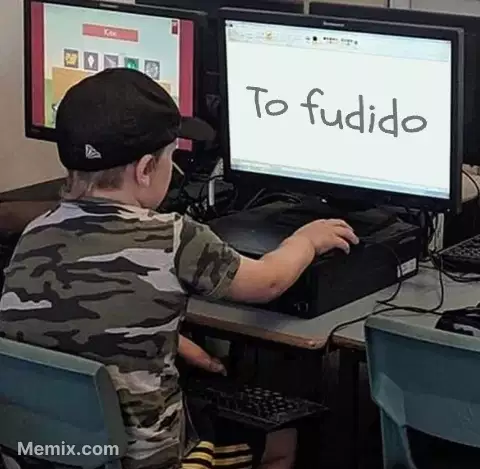
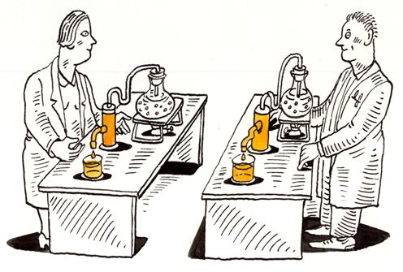
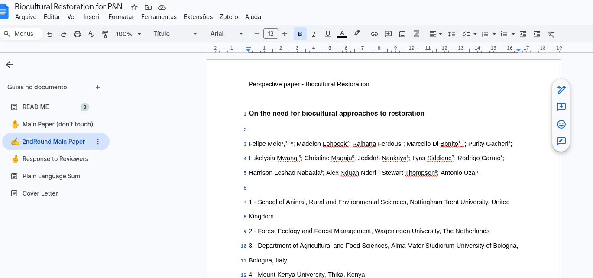

Aula 5 - Escrita Científica de Alto Impacto
PPGBV - UFPE
O Desafio da Escrita
- Escrita como jornada
- Compreensão de requisitos
- Superação de obstáculos
- Busca pela maestria

Metacognição e Texto
- Conhecimento do saber
- Atividade reflexiva
- Monitoramento ativo
- Autonmomia e compreensão

Retextualização
- Não é uma justa-posição
- Esforço multi-cognitivo
- Transformação de dados
- Criação de sentido novo

A voz do autor

- Originalidade
- Estilo linguístico
- Criatividade
- Provocação
A ciência não está pronta
- Luta entre teorias.
- Concepções de mundo.
- Progresso disruptivo.
- Provisoriedade do saber.
Leitura Crítica
Leitura em 3 estágios

1 - Visão geral ✅
2 - Leitura detalhada ✅
3 - “Recriar o artigo” ✅
Estágio 1 - Visão geral
- Título + Resumo + Introdução
- Pule para as conclusões
- Dê uma olhada nas referências

Estágio 1 - Responda
- De que se trata o artigo?
- Qual o contexto teórico?
- As premissas são válidas?
- Qual a principal mensagem?
- Está bem escrito?

Estágio 2 - Leitura detalhada
- Examine figuras e tabelas
- Leia os resultados com cuidado
- Sublinhe as referências novas

Estágio 2 - Seja capaz de:

- Resumir o artigo para terceiros
- Julgar a qualidade das evidências
- Ter uma opinião sobre a qualidade do trabalho
Estágio 3 - “Recriar o artigo”

- Necessário quando se é revisor
- Questionar todos os pontos
- Examinar pressupostos com detalhe
- Reproduzir o exprimento
Estágio 3 - Seja capaz de:

- Apontar pontos fracos e fortes
- Imaginar melhorias no exprimento
- Localizar lacunas de conheciment
Revisão de literatura
- Um “mar” de papers
- Quais devo ler?
- Onde procurar?
- Existe método?

Busca de literatura
- Palavras-chave
- Autores
- “Bola-de-neve”
- Revisões recentes

Ler com foco
- Tenha sempre sua questão “na cabeça”
- Saiba diferenciar “luxo” de “lixo”
- Faça anotações

Método PRISMA

Método PRISMA

Exercício
- Faça uma busca usando palavras específicas da sua área
- Faça um primeiro levantamento
- Selecione um sub-conjunto de artigos
Parte 2 - Escrita Crítica
Defina sua estratégia

- Introdução
- Métodos
- Resultados
- Discussão
O fantasma da página em branco
- Comece por onde for melhor
- Crie hábito de escrever diariamente
- Não fique num loop infinito
- Mantenha o documento limpo

exemploUse ferramentas de citação
- Organize suas coleções
- Aprenda a formatar referências
- Trabalhe coletivamente

Cuida da qualidade do seus gráficos
- Perfeição é pouco
- Estética importa
- Evite exageros
- Saiba reproduzir
Formatação
- Formatação simples
- Gráficos no texto
- Número das linhas
- Espaço DUPLO
Cover Letter
- Formal e direta
- Resuma o recado para o editor
- Informe a estrutura do paper
- É uma venda!!!

Escreva sua “cover letter”
Objetivos de uma escrita crítica

- Aprender a aprender
- Superar a cópia
- Síntese de saberes
- Criatividade própria
Divulgação dos Resultados

- Clareza e precisão
- Exposição de métodos
- Reconhecimento de erros
- Impacto na sociedade
Escrita como diálogo

- Além do linguístico
- Expressão da curiosidade
- Chama da descoberta
- Ciência como arte
Próximos Passos
- Praticar a escritura
- Submeter manuscritos
- Responder a revisores
- Pedir financiamento